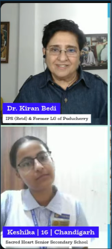

INTERACTION • LEADERSHIP • EXPERIENCE
Interaction with Dr. Kiran Bedi
I was a part of The Book Reading Session 144 organised by Dr. Kiran Bedi (First Woman IPS Officer of India and Former Lt. Governor of Puducherry) and team. I discussed with her my aspirations and personal projects, including the Digital Disha Program, which was greatly praised by her.

Videos
Watch the interaction
The YouTube video Dr. Kiran Bedi uploaded on her own channel can be found here.
Watch Video on YouTubeThe YouTube video I uploaded from my own channel can be found here. It includes only snippets of my conversations with Dr. Kiran Bedi.
Watch Video on YouTubeBack to initiatives
This interaction became a meaningful moment in my journey of leadership, service, and building Digital Disha.
View More Initiatives →